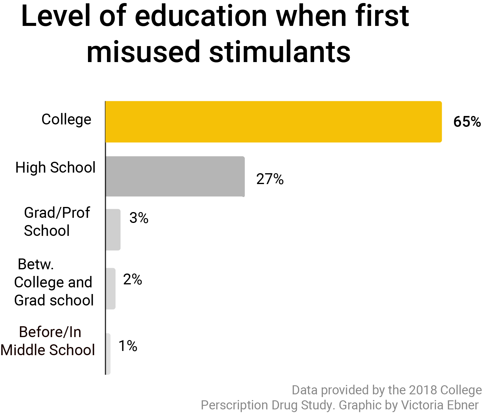

Twelve months ago, a post with a particularly foreboding title made its way onto the University of Maryland’s official subreddit page.
“A warning to those who use Adderall,” the title read. “Don’t be like me.”
What followed was an almost 700-word testimonial of a man recently clean from Adderall abuse, a problem that had followed him most of his life — especially during his time at the University of Maryland.
The man –– who spoke under the condition of anonymity due to fear of repercussions due to his illegal drug use — said he first found Adderall during his first attempt at undergraduate school at Oregon State University. After he eventually failed out, he joined the Air Force, where Adderall wasn’t allowed.
But he never forgot the drug, and when he got accepted to Maryland to finish his degree, he felt the pressure of starting over as a computer science student well up again and began comparing himself to others. Despite feeling better without the stimulant, he admitted that he retook the ADD test and purposefully manipulated the test to ensure he would get a prescription.
Determined to gain an edge on other students, he took Adderall regularly but soon experienced horrible dry mouth, trouble sleeping and difficulty digesting food. After months of trying to quit, his wife finally persuaded him to stop.
"[Taking Adderall] was a horrible mistake,” he wrote in the post, three days clean but experiencing painful withdraw. “I have to find who I am again … I don’t know how long the anxiety and depression will last.”
The man’s story is far from unique. As shown in the dozens of responses to the post expressing condolences and similar confessions, misuse of Adderall and other “study drugs” runs rampant across college campuses — with school officials at Maryland and other colleges struggling to find ways to prevent it.
Jillian Stabile, a senior bioengineering major at Maryland, said that as a STEM major, she herself has only tried using Adderall once — but knows many people regularly who use non-prescription stimulants to study for exams.
“People rely on it,” she said. “A lot of people use them primarily for exams — like every single time they take an exam they take a lot of Adderall for multiple days in a row [beforehand].”
Stabile added that often, people studying together will all take it at the same time, making it something of a social ritual. Even just obtaining Adderall, she said, is often facilitated through finding a friend or a friend’s friend that has a supply for sale.
Another student, Samantha Hargis, a sophomore history major, echoed Stabile on the issue’s prevalence at Maryland. Before coming to the University of Maryland, she did not know it would be so ingrained in student culture.
An annual report provided by the University of Maryland Health Center found that stimulants such as Adderall and Ritalin represented the area in which the most substance abuse cases were recorded during the 2017-2018 school year.
Additionally, 65 percent of students who abuse Adderall start in college, according to the Ohio State University’s College Prescription Drug Study in 2018.
“I never knew people that did that before I came here. And then I was like, oh, it’s a thing.” she said. “They don’t take it seriously.”
Though some students seemed indifferent to the problem of stimulant abuse, one student in particular with ADHD took issue with the lax attitudes surrounding abusing the very medication that is necessary to her daily life.
“It’s really hard, as someone who depends on this, to function in their daily lives,” Katie Karayianis, a senior psychology major said. “It’s frustrating, because I go through a hassle to get it [and] I need it.”
Karayianis, the president of DAPi –– an honors society on campus that aims to help those with physical or cognitive disabilities to achieve educational success –– stressed that many people don’t understand the consequence the drug has on others’ daily lives, proving insensitive to those who truly need it.
Thus, they are neglecting what the drug is actually supposed to be used for –– those who need help focusing on everyday life, not just for a boost every once and awhile.
“It’s not just about doing homework...there’s a big difference when my medicine has kicked in and I’m getting ready in the morning and when it hasn’t kicked in, it’s the difference of a whole hour,” she said. “When they think ADHD and they think medication, they think ‘oh, studying’ –– no, it’s not just studying.”
The university requires all students to take a drug prevention course about why they shouldn’t misuse this drug and offers a Substance Assessment and Intervention Program for students who have been charged, according to Maryland’s Health Center website.
However, some students said that it would be very hard for officials to have any real effect in decreasing Adderall misuse, since that would involve trying to control an individual’s person life.
“I feel like they don’t do anything, but I don’t know how you would control that,” Hargis said.
Stabile added that though honest dialogue amongst students along with increased education might help, it might not have that much actual effect on the private actions of students.
“The people doing it, I don’t think [they] are going to listen to any concerns about it,” she said. “It’s pretty much out of the university’s hands.”